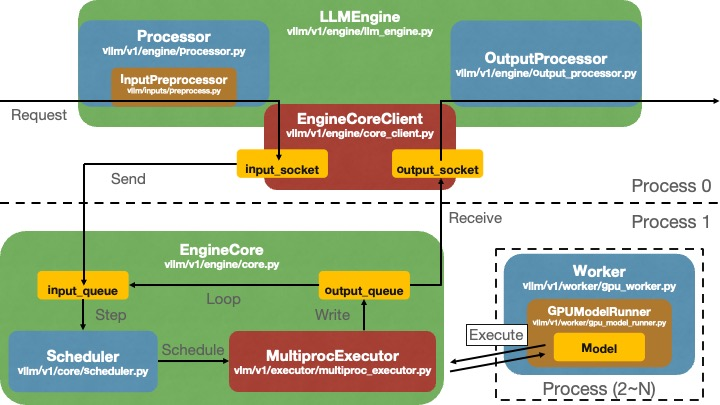
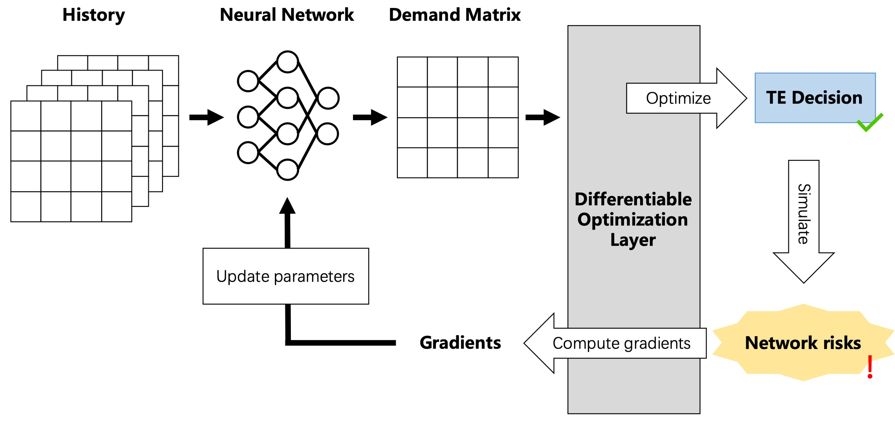
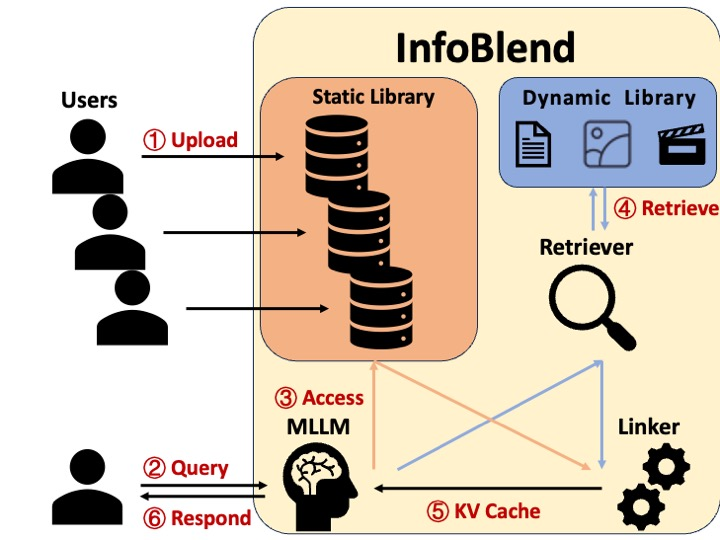
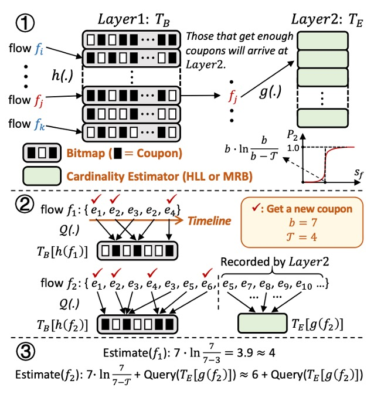

研究兴趣

- 容错网络
- 流量工程
安全和可靠是网络的基础，在此之上我们追求高效和便捷。

- 大模型推理系统
任何产品和技术都需要不断降低成本才能发展。
论文出版
中国人何必为难中国人，我尽量做到每一篇论文都有中文版，每一篇论文的代码都公开。中文版没有经过校对，可能会有错别字和翻译不准确的情况，此时以英文版为准。

S. Zhao, J. Zheng, G. Chen. Rethinking Failure-Tolerant Traffic Engineering with Demand Prediction, in IEEE/ACM International Symposium on Quality of Service, in press, 2025.


X. Song, J. Zheng, H. Qian, S. Zhao, H. Zhang, X. Pan, G. Chen. In Search of a Memory-Efficient Framework for Online Cardinality Estimation, in IEEE Transactions on Knowledge and Data Engineering, vol. 37, no. 1, pp. 392-407, Jan. 2025. [paper]
X. Song, J. Zheng, H. Qian, S. Zhao, H. Zhang, X. Pan, G. Chen. Couper: Memory-Efficient Cardinality Estimation under Unbalanced Distribution. 2023 IEEE 39th International Conference on Data Engineering (ICDE), Anaheim, CA, USA, 2023: 2753-276